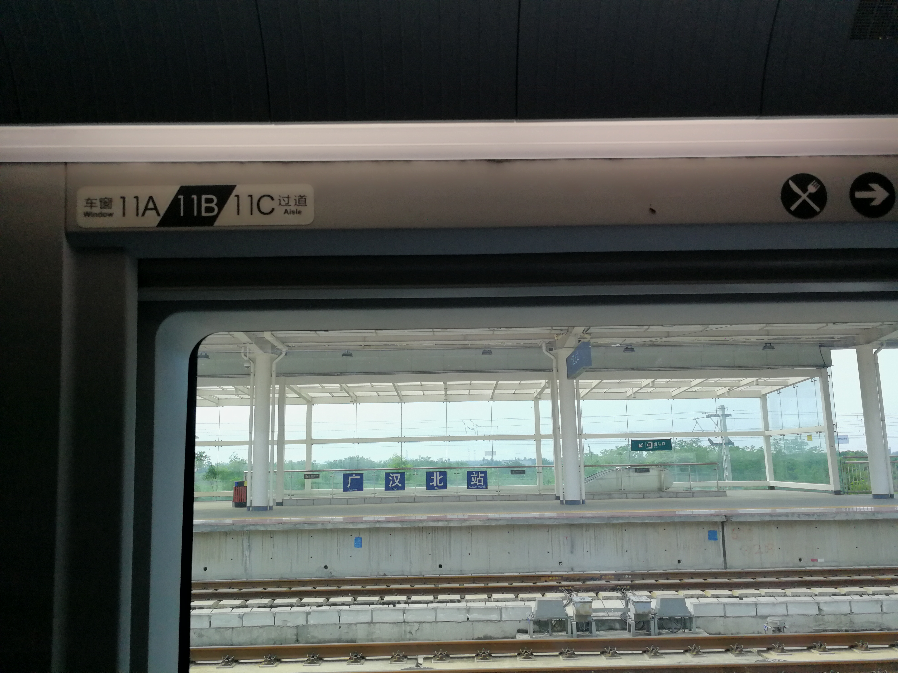
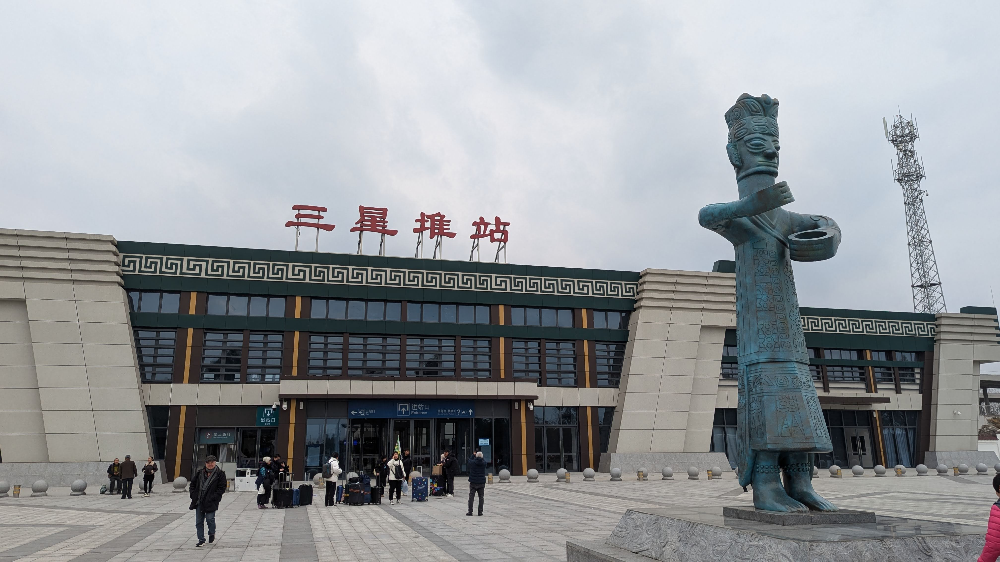
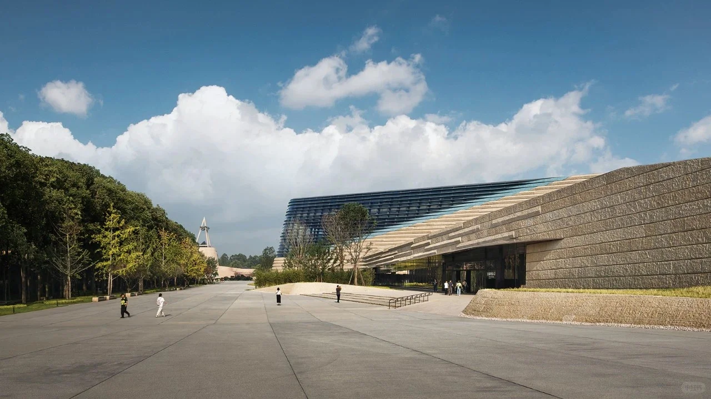

- 01
查询出发城市 → 广汉北 / 三星堆的当日车次，先确认实际发到站。
- 02
在实时地图分别查询所选车站 → 三星堆博物馆或市区住宿的公共交通与驾车路线。
- 03
预留出站、等车、入馆检票时间，再决定预约场次。返程同样预留进站缓冲。
先把路查清楚，
再从容出发。
到达、预约、转场与休息。把最常用的信息，放在一起。
Getting here / 怎么到广汉
先选交通，再安排预约。
- 01
从三星堆官方参观指南进入交通路线，查看对应运营信息。
- 02
确认当日去程与返程是否运行、集合点及购票方式。
- 03
只安排博物馆时可考虑往返；继续去老城时，另外安排博物馆 → 市区转场。
- 01
出发前查看道路状态，按目的地实际入口选择导航终点。
- 02
到馆后按现场指引停车或下车，步行到入口仍需留时间。
- 03
雒城与房湖合并走；黑塔街另查导航；连山乡野单独留半日。
整理：2026-10-10 · 交通方式参考馆方指南与接驳资料；车次、班次、票价和路况请查看当日查询结果。
Three different places / 先分清目的地
两个车站，一个博物馆。
买车票时选铁路车站；预约、导航参观时选三星堆博物馆。车站到博物馆还需要接驳。



车站照片为注明日期的历史影像，按版式裁切、缩放并压缩；两张车站图片及适配版本沿用 CC BY-SA 4.0。现行出入口、设施和接驳以现场为准。
Leave room / 市区转场
把路上的时间，也留进旅程。
Before the museum / 预约与服务
去三星堆之前，先确认三件事。
日期、场次与证件
通过馆方官方渠道实名预约，核对入馆日期、时段和购票证件。先有预约，再安排抵达与返程。
打开官方参观指南需要怎样的帮助
官网列明游客中心与陈列馆大厅有轮椅、婴儿车等便民设施租借服务。需要时先咨询服务台，确认条件与余量。
观展与拍摄规则
先看现场标识，留意禁拍展品与区域；不使用闪光灯、自拍杆，不触摸展品。讲解与导览服务按馆方当日安排选择。
服务资料整理：2026-10-10 · 依据三星堆博物馆官方参观指南 · 临时开放与服务调整以馆方最新公告为准。
Pocket notes / 逐地点出行小抄
找到这一站，要用的信息。
展开一个地点，查看预约、转场、天气和休息安排。设施没有核实的部分，写明需要到场确认。
三星堆博物馆城西 · 预约后出发
- 预约与开放
- 提前通过馆方官方渠道实名预约，核对日期、场次与入馆证件。
- 到达与转场
- 车站 → 馆区接驳 → 入口检票，三段分别留时间；自驾看停车场入口。
- 雨天怎么安排
- 展厅适合雨天参观，排队、入园与转场仍可能经过露天路段。
- 休息与便民
- 官网列明游客中心与陈列馆大厅提供轮椅、婴儿车等便民设施租借服务；需要时先咨询服务台。
- 设施确认
- 租借条件、是否有余量、寄存与无障碍通行细节，出发前向馆方确认。
整理：2026-10-10 · 服务信息依据官网整理；天气和转场为本站建议。 三星堆博物馆 · 官方参观指南
雒城遗址市区 · 与房湖一起走
- 预约与开放
- 城址保护区域按现场开放范围游览，若遇修缮，调整顺序。
- 到达与转场
- 与房湖合并为一段联游；走到可开放的城门或墙体，再进入园林。
- 雨天怎么安排
- 主要为户外步行，雨天减少砖石路面与台阶段。
- 休息与便民
- 城址观察之后把休息留给房湖周边，不为了凑节点反复进出。
- 设施确认
- 厕所以及推车、轮椅可通行路径到场看导览牌；未经核实的出入口不作无障碍承诺。
整理：2026-10-10 · 文化背景依据公开资料；步行与休息为本站规划建议。 广汉市政府 · 房湖与文庙文化活动资料
房湖公园市区 · 与雒城联游
- 预约与开放
- 和雒城按同一联游组安排，园内具体区域是否开放以现场为准。
- 到达与转场
- 从可开放入口进入，湖池、文庙与城址合计约两小时；不重复计入行程。
- 雨天怎么安排
- 园林以露天为主，天气不好时缩短步行与湖岸停留。
- 休息与便民
- 按同行者体力选择短段，参观文庙与碑刻后留出休息。
- 设施确认
- 停车、厕所和无障碍入口到场核对导览；不把园林有步道等同于全程无台阶。
整理：2026-10-10 · 地点关系依据公开资料；游览时长与休息为本站建议。 广汉市政府 · 房湖与文庙文化活动资料
黑塔街与老城生活市区 · 街巷与茶席
- 预约与开放
- 街区可作为慢游目的地，具体茶馆与店铺按当日营业选择。
- 到达与转场
- 从房湖或博物馆到黑塔街，单独查看市区导航；不按同一景区估算步行。
- 雨天怎么安排
- 巷道为户外，喝茶可作为雨天可选停留，先确认有营业且有合适座位。
- 休息与便民
- 给一杯茶留出时间，入座前问清消费、茶水与座位安排。
- 设施确认
- 需要厕所、推车空间或少台阶入口时先询问店家；拍摄茶客与店内环境先征得同意。
整理：2026-10-10 · 街区背景依据公开资料；消费、座位与设施需到店确认。 广汉市政府 · 黑塔街与地方生活
广汉味道与手艺市区用餐 / 连山专题
- 预约与开放
- 用餐前确认营业和座位；手艺展示不是承诺的固定演出。
- 到达与转场
- 市区金丝面与连山镇回锅肉分开搜索；一日线优先在市区用餐。
- 雨天怎么安排
- 按当天营业选择室内餐饮，雨天可用用餐与休息替换户外段。
- 休息与便民
- 点餐先问辣度与份量，按人数安排；给孩子或不吃辣的同行者留选择。
- 设施确认
- 婴儿座椅、无障碍入口和厕所由具体门店提供，不能从菜品照片推断。
整理：2026-10-10 · 饮食背景依据公开资料；营业、设施与菜单到店确认。 广汉市政府 · 金丝面手艺资料
金雁湖公园鸭子河畔 · 城市水岸
- 预约与开放
- 散步与临时活动分开安排；游乐、灯光或演出先查当天信息。
- 到达与转场
- 以金雁湖公园为导航目标；沿湖走短段，前往其他市区节点另查导航。
- 雨天怎么安排
- 按天气决定湖岸停留，夏季避开正午暴晒，遇降雨缩短户外段。
- 休息与便民
- 把傍晚散步当作可删减段；正餐与返程不依赖临时摊点。
- 设施确认
- 厕所、停车与可通行步道到场查看指示，设施开放不能从旧照片确认。
整理：2026-10-10 · 本条为本站行前规划建议；公园开放、活动与设施请查看最新消息。 广汉市政府 · 城市资讯入口
连山桃花山城区以东 · 单独安排半日
- 预约与开放
- 先确认当年花期或活动消息；桃花图片展示春季景观。
- 到达与转场
- 连山镇乡野单独留半日，城区往返、停车与步行各留时间。
- 雨天怎么安排
- 山地与桃园以户外为主；雨天或非花季改选市区路线。
- 休息与便民
- 步道与田间路按体力选择，可在连山镇安排午餐后返程。
- 设施确认
- 停车场、厕所与路面情况查当天信息；乡间小路不作为稳定无障碍路线。
整理：2026-10-10 · 地点背景依据连山镇资料；花期、活动和设施另行确认。 连山镇 · 松林桃花山文旅资料
Questions before leaving / 行前问答
还有什么，想先问清楚？
第一次来，只有一天怎么安排？
选择一日经典：上午三星堆，中午用餐与转场，午后雒城房湖联游，傍晚黑塔街，市区晚餐后返程。先确认三星堆预约和返程车次。
打开一日经典雒城和房湖要算两站吗？
它们适合合并为一段约两小时的联游。加入我的行程时会自动合并，避免重复安排停留时间。
查看联游顺序三星堆在哪里买票、看开放时间？
通过三星堆博物馆官方网站查看预约、开放时段和优惠规则。本指南不销售门票，先确认可预约日期，再安排路线。
查看博物馆官网下雨或带孩子，怎么少走一点？
雨天以预约观展和市区餐饮为主；亲子路线只安排一个重点展馆和一个可选湖岸段。天气或体力不合适时，跳过户外节点。
打开亲子松弛路线金丝面和回锅肉去哪里找？
市区可以搜索金丝面；连山镇适合单独安排回锅肉体验。美食专题提供两种地图搜索入口，请结合当天营业信息选择门店。
打开美食地图入口桃花现在开着吗？
本站桃花图片展示春季景观，没有实时花情数据。请先查看连山当地的当年花期与活动消息，再使用花季乡野路线。
查看连山专题收藏和行程保存在哪里？
收藏、行程和勾选清单保存在当前浏览器。可以下载 PNG 行程卡或复制行程文字；更换设备时，使用复制的行程链接恢复路线。
查看我的行程